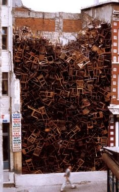
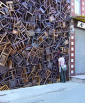

21st
March
2007
Okay JYC readers, are you awake? I’m going to post these nifty icons, and then you tell us what they are. Not just where they’re from, but let us know what each icon actually represents. After they’ve all been guessed (or if too much time passes by) I’ll post more about this fantastic set. Post your guesses in the comments.
posted in Art, Design, Disney |
21st
March
2007
These Clipper Cards make me want to go settle some new territory. An amazing use of color and typography.
[Via John Nack, I believe]
posted in Art, Design |
21st
March
2007
I don’t know who did this, but it’s nearly as good as the the fucking short version:
[via Defamer]
posted in Video Games |
21st
March
2007
Chimps make crappy Lose Weight Exercise buddies. Or perhaps, if Tiki-Kate is right, they make evil Lose Weight Exercise buddies. Or maybe the dog’s just lazy. [via Spectre Collie]
posted in Television |
21st
March
2007
According to Scary Ideas, these coasters were placed in popular bars throughout Mumbai by the Mumbai Traffic Police, as a reminder of the dangers of driving drunk.
Bloody coasters from Mumbai
The coasters were printed using a special red dye that only appears when the coaster gets wet — so when a drink’s condensation runs down the glass to the coaster, it creates a ring of blood. Yowzers!
This is a pretty good, if unsettling, use — I wonder if we’ll see this special dye used again in a more jovial form at Halloween. [via BoingBoing]
posted in Design, Tech |
20th
March
2007
Hanford just picked up this little plastic puppy:
My new puppy
So very wee!
It’s really little — you can see me holding it in my fingers here — and I’ve got teeny fingers. He found it in one of those coin-operated kiddie machines, and got it for two quarters. This thing is just insanely detailed. I’ve got it blown way up in that picture above so you can see all the little features. The eyes and nose are painted on, and they’re just perfect. The fur, the mouth, the ears — every detail is meticulously defined. Fifty cents goes a long way in the puppy-crafting trade, apparently.
posted in Design |
20th
March
2007

Doris Salcedo installation,
photo by Sergio Clavijo
I’m fascinated by this art installation by Columbian artist Doris Salcedo. In 2003, Salcedo stacked 1,600 wooden chairs in an empty space between two buildings in Istanbul, for the International Istanbul Biennale.

Where did she get so many chairs? How did she get them in there? How did she get them out? What was done with them when the installation was removed? WHAT DOES IT ALL MEAN???
No really, what does it all mean? I can’t find any information on what her inspiration or message was for this. The website linked above notes “Salcedo often takes specific historical events as her point of departure,” so I get the idea I’m missing part of the story. I don’t need to know what it means to think it’s very cool, though. [via design*sponge]
posted in Art |
20th
March
2007
Humu’s last post about Floratina’s Funny Face cup reminded me of Way Out Junk‘s post about Goofy Grape Sings. After all these years it’s so great to finally match a voice to that Funny face … and it sounds like Boris Badinov. Yes, all the voices are done by Paul Frees. The songs are available for download, but personally I just like the album cover.
posted in Food, Midcentury, Music |
20th
March
2007
Floratina and her Funny Face
This post at a sampler of things reminded me of this great picture I took last summer of my dear friend Floratina, and her cherished Freckle Face Strawberry Funny Face cup. We were at a beach burn down in San Pedro, and the light from the fire was so romantic… I was happy to be able to capture this love between a woman and her cup.
I don’t think I ever had Funny Face drink mixes — Dad was a Kool-Aid man, all the way. Dad always had two flavors going in the fridge at once: one jug of Mountain Berry Punch, and the other jug on rotation through the other flavors. My brother and I used to make quadruple-strength Kool-Aid (two packets, twice the sugar, half the water) and nuke it in the microwave. Yum!
posted in Food |
20th
March
2007
posted in Design, Tech |